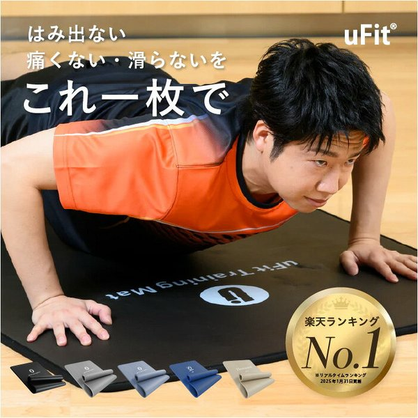
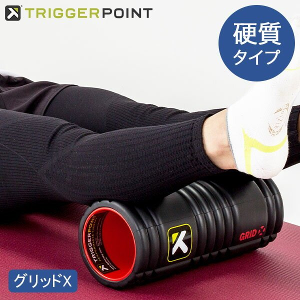
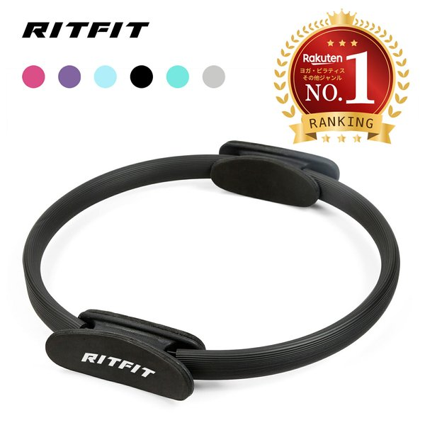
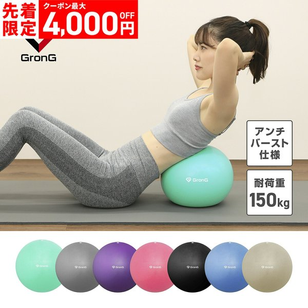
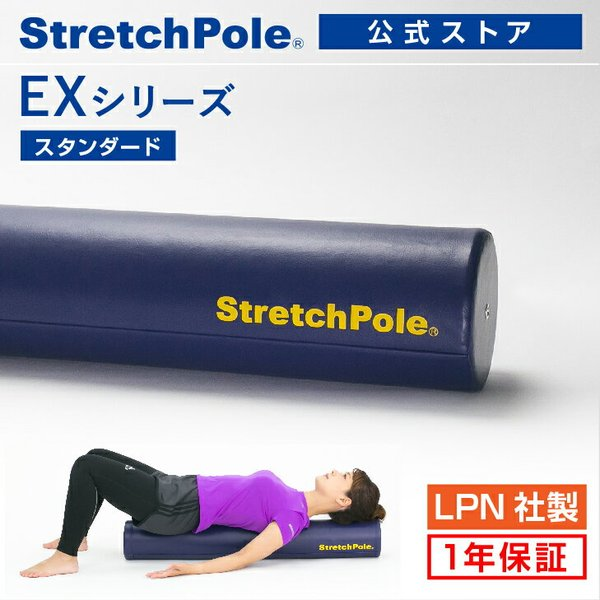
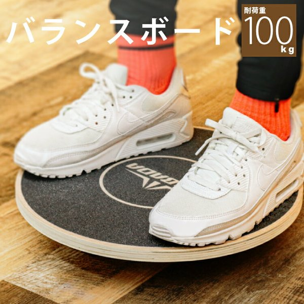
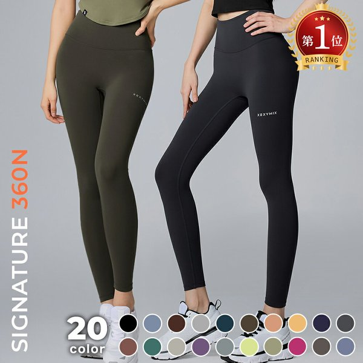
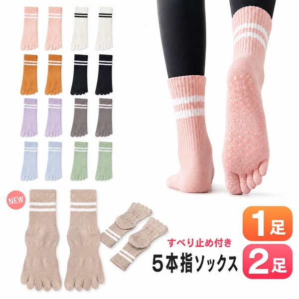
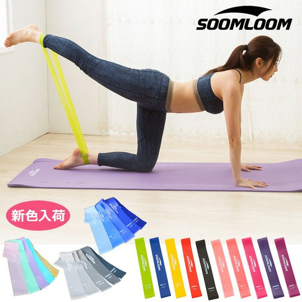
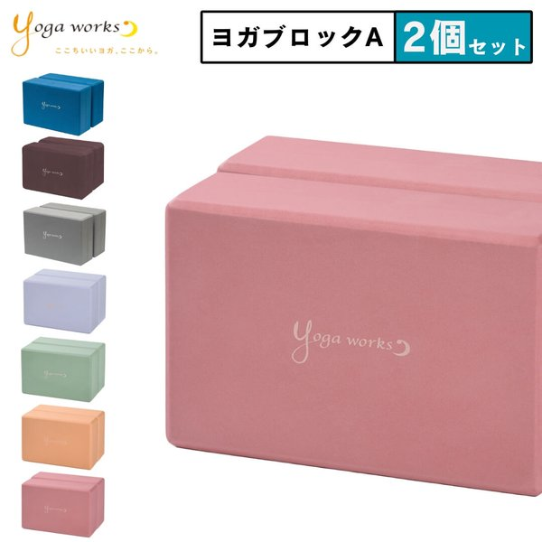

【2026年・おうちヨガ10選】uFit トレーニングマット・トリガーポイント グリッドX・RITFIT ピラティスリング・グロング ピラティスボール・LPN ストレッチポールEX・DABADA バランスボード・ゼクシィミックス レギンス・BREAKIST ヨガソックス・SOOMLOOM チューブ・ヨガワークス ブロックを実売価格で比較
ヨガとピラティスは、家でやると続く人と続かない人がはっきり分かれます。違いが出るのは、マットを出しっぱなしにできるか、道具が1か所にまとまっているかです。
選ぶ軸は3つです。まず床の痛さ。膝をつくポーズが多いなら10mm以上のマット、立つポーズ中心なら6mm前後で足ります。次にほぐすか、鍛えるか。フォームローラーとストレッチポールはほぐす道具、リングとチューブとバランスボードは力を入れる道具です。最後に洗えるか。ソックスとウェアは洗濯できるものを選ぶと、週に何度でも使えます。
本記事では、楽天市場で人気・高評価のヨガ・ピラティス・ストレッチ道具10選を、実売価格とレビュー評価つきで写真付き紹介します。
- おすすめ10選 スペック・特徴比較表
- BEST 1｜uFit Training Mat トレーニングマット 10mm/15mm 90×200cm
- BEST 2｜トリガーポイント フォームローラー グリッドX
- BEST 3｜RITFIT ピラティスリング マジックサークル
- BEST 4｜GronG ピラティスボール 25cm 空気入れストロー付き
- BEST 5｜LPN ストレッチポールEX スタートBOOK・DVD付き
- BEST 6｜DABADA バランスボード 木製 直径39cm
- BEST 7｜ゼクシィミックス ヨガレギンス スポーツレギンス
- BEST 8｜BREAKIST ヨガソックス 5本指 滑り止め 2足セット
- BEST 9｜SOOMLOOM トレーニングチューブ 5本セット
- BEST 10｜ヨガワークス ヨガブロックA 2個セット YW-E321
- 【読者負担0円】買わなくても得する無料サービス
- まとめ：ヨガ・ピラティスグッズ10選の選び方
| 順位 | 商品名 | ブランド | 最大の特徴・おすすめ理由 | 総合評価 |
|---|---|---|---|---|
| BEST 1 | uFit Training Mat トレーニングマット 10mm/15mm 90×200cm | uFit | 90×200cmで体がはみ出しにくい | 4.46 |
| BEST 2 | トリガーポイント フォームローラー グリッドX | トリガーポイント（Trigger Point） | 硬質でしっかり圧がかかる | 4.67 |
| BEST 3 | RITFIT ピラティスリング マジックサークル | RITFIT | 椅子に座って使える | 4.51 |
| BEST 4 | GronG ピラティスボール 25cm 空気入れストロー付き | グロング（GronG） | 25cmで扱いやすい | 4.45 |
| BEST 5 | LPN ストレッチポールEX スタートBOOK・DVD付き | LPN（ストレッチポール） | 背中をまとめてほぐせる | 4.70 |
| BEST 6 | DABADA バランスボード 木製 直径39cm | DABADA（ダバダ） | 乗るだけで体幹に効く | 4.55 |
| BEST 7 | ゼクシィミックス ヨガレギンス スポーツレギンス | ゼクシィミックス（xexymix） | 20色から選べる | 4.68 |
| BEST 8 | BREAKIST ヨガソックス 5本指 滑り止め 2足セット | BREAKIST（ブレイキスト） | 5本指で指が自由に動く | 4.69 |
| BEST 9 | SOOMLOOM トレーニングチューブ 5本セット | SOOMLOOM | 5本で強度を変えられる | 4.50 |
| BEST 10 | ヨガワークス ヨガブロックA 2個セット YW-E321 | ヨガワークス（yogaworks） | 2個セットで両手で使える | 4.73 |
uFit Training Mat トレーニングマット 10mm/15mm 90×200cm

uFitのトレーニングマットです。10mmと15mmの厚さ、90×200cmの大きめサイズで、膝や腰が床に当たっても痛くなりにくいのが特徴です。NBR素材で、汗をかいても拭き取りやすい表面です。楽天市場での実売価格は約6,480円（2026年11月時点）。
- 90×200cmで体がはみ出しにくい
- 10mmと15mmから選べる
- 厚手で膝が痛くなりにくい
- 厚手で重いので、毎回しまうには向かない
トリガーポイント フォームローラー グリッドX

トリガーポイントのフォームローラーです。硬質タイプで、体重をかけて筋肉の芯まで圧をかけられます。表面の溝が背骨に当たらない形なので、仰向けに寝て背中をほぐせます。楽天市場での実売価格は約5,999円（2026年11月時点）。
- 硬質でしっかり圧がかかる
- 溝が背骨に当たらない
- 中空構造で持ち運べる
- 硬いので、初めて使う人は痛みを感じることがある
RITFIT ピラティスリング マジックサークル

RITFITのピラティスリングです。両側から挟んで内ももや二の腕に力を入れる器具で、椅子に座ったままでも使えます。EVAのハンドルが付いていて、手が滑りにくい作りです。楽天市場での実売価格は約2,780円（2026年11月時点）。
- 椅子に座って使える
- 内ももに効かせやすい
- ハンドル付きで滑りにくい
- リングの硬さが合わないと、力の入れ具合がつかみにくい
GronG ピラティスボール 25cm 空気入れストロー付き

グロングのピラティスボールです。直径25cmの小さめサイズで、内ももに挟んだり、背中に当ててバランスを取ったりするのに使います。空気入れ用のストローが付属し、自分の硬さに調整できます。楽天市場での実売価格は約680円（2026年11月時点）。
- 25cmで扱いやすい
- 空気量で硬さを変えられる
- ストロー付きですぐ膨らませられる
- 空気を入れすぎると硬くなり、挟むトレーニングがしにくくなる
LPN ストレッチポールEX スタートBOOK・DVD付き

LPNのストレッチポールです。円柱の上に仰向けに寝て、背中や肩甲骨まわりをほぐす器具です。スタートBOOKとエクササイズDVDが付いているので、載せる位置と動かし方を映像で確認できます。楽天市場での実売価格は約11,979円（2026年11月時点）。
- 背中をまとめてほぐせる
- DVD付きで使い方が分かる
- 1年保証付き
- 長さがあるので、寝転べる場所を確保する必要がある
DABADA バランスボード 木製 直径39cm

DABADAのバランスボードです。直径39cmの木製ボードの上に乗って、体幹を保つトレーニングに使います。大人が乗ってもたわまない厚さで、子供が乗って遊ぶのにも使える大きさです。楽天市場での実売価格は約2,498円（2026年11月時点）。
- 乗るだけで体幹に効く
- 木製で滑りにくい
- 直径39cmで足が収まる
- バランスを崩すと転ぶので、周りに物を置かない場所で使う
ゼクシィミックス ヨガレギンス スポーツレギンス

ゼクシィミックスのヨガレギンスです。伸縮性のある生地で、ヨガやピラティスのポーズでも動きを妨げません。20色から選べ、同じ商品の2枚目を半額にできるクーポンが出ています。楽天市場での実売価格は約5,940円（2026年11月時点）。
- 20色から選べる
- 伸びる生地で動きやすい
- 2枚目半額のクーポンがある
- 薄手なので、寒い部屋では下に何かを履きたくなる
BREAKIST ヨガソックス 5本指 滑り止め 2足セット

BREAKISTのヨガソックスです。5本指で、足裏に滑り止めが付いています。2足セットで、くすみカラーの色違いを履き分けられます。ピラティスのマシンの上でも滑りにくい生地です。楽天市場での実売価格は約950円（2026年11月時点）。
- 5本指で指が自由に動く
- 滑り止め付きでマットから滑らない
- 2足セットで洗い替えできる
- 5本指に慣れるまで、履くのに時間がかかる
SOOMLOOM トレーニングチューブ 5本セット

SOOMLOOMのトレーニングチューブです。強度の違う5本セットで、腕・肩・脚のトレーニングに使います。ゴムを引っ張るだけで負荷をかけられるので、広い場所がなくても運動できます。楽天市場での実売価格は約790円（2026年11月時点）。
- 5本で強度を変えられる
- 場所を取らずに使える
- 持ち運べる軽さ
- ゴムなので、爪や床の傷に引っかかると切れることがある
ヨガワークス ヨガブロックA 2個セット YW-E321

ヨガワークスのヨガブロックです。高密度EVAで、2個セット。ポーズが届かないときに台にして使ったり、骨盤の下に置いて座ったりします。軽いので、片付けのときに重さを気にせず運べます。楽天市場での実売価格は約4,180円（2026年11月時点）。
- 2個セットで両手で使える
- 高密度EVAでへたりにくい
- 軽くて持ち運べる
- 硬いので、座るときはタオルを敷いたほうが楽なことがある
この記事の商品を買う前に、まずは無料で得する選択肢をチェック。どれも登録・利用は0円で、無料期間中に解約すれば料金はかかりません。読みたい雑誌がある人、ポイントを貯めたい人、アンケートなら気軽という人、それぞれに合うものを選べます。
初回31日無料・無料期間中に解約すれば0円 → 楽天ポイントモール｜登録無料で毎日ポイ活
買い物なしでもポイントが貯まる無料サービス → 楽天インサイト｜アンケートに答えてポイント
登録無料・すきま時間のアンケートで貯まる → 楽天カード｜年会費永年無料
新規発行・年会費ずっと0円 →
4つのサービスの違いと使い分けは「出費0円で得する！買わずにポイントが貯まる無料サービス厳選4選」でまとめています。
💡 まとめ：ヨガ・ピラティスグッズ10選の選び方
家でヨガを続けるなら、まずマットを決めます。膝が痛くなりやすい人はuFitの10mmか15mm、収納を優先するなら薄手。ほぐす道具はトリガーポイントのグリッドXとLPNのストレッチポールEX、鍛える道具はRITFITのピラティスリング、グロングのピラティスボール、SOOMLOOMのチューブ、DABADAのバランスボードです。ポーズの補助にはヨガワークスのブロック、足元はBREAKISTのヨガソックス、ウェアはゼクシィミックスのレギンス。マットとブロックから始めて、物足りなくなったらリングとチューブを足すと、飽きずに続けられます。
楽天市場では「5と0のつく日」や「お買い物マラソン」などのキャンペーンに合わせて購入すると、ポイント還元が最大化してお得に手に入ります。ぜひチェックしてみてくださいね。